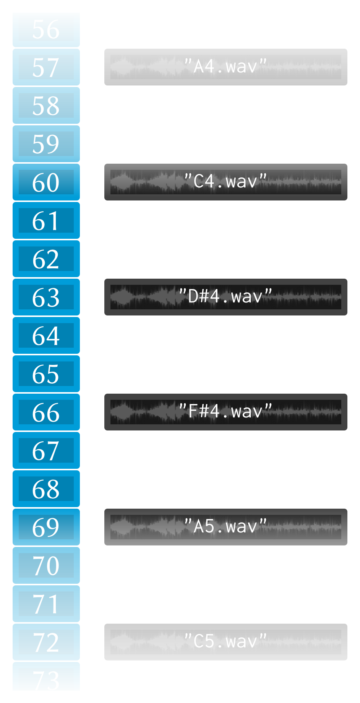

Loading and using a sampler¶
A sampler is an instrument which stores chunks of audio which can be triggered—played back. Samplers are used in many different ways, such as providing digital simulations of acoustic instruments (e.g. a piano sampler which plays recorded samples of a real piano when triggered by messages from a MIDI keyboard) or they can be used to play and manipulate non-acoustic sounds.
Since samplers are so useful, Extempore provides a built-in sampler in
libs/external/instruments_ext.xtm. This sampler basically works
like any other Extempore instrument, such as those described in
Making an instrument), except that the note kernel closure is
already set up for you—you just have to load the sampler with sound
files. There is also a slight difference in the way we set a sampler
up: using the Scheme macro bind-sampler instead of
bind-instrument. The Extempore sampler is still an xtlang closure,
and can be used in all the same situations (e.g. as the inst
argument to play-note or play) as an instrument can.
Samplers 101¶
You can think of a sampler as a series of ‘slots’, each of which contains a sound file.

Each slot has a unique index, and playing the sampler generally involves specifying the index of the sample to play, the loudness/velocity and the duration. There are lots of subtleties to this process, such as what to do when the duration is longer than the sample length, what to do if there isn’t a sample at the given index, etc., but at a high level that’s how it works.
If you look at the filenames in each slot (although it’s the audio data in the slots, not the filename strings), you’ll notice that they refer to wave (audio) files named with scientific pitch notation. These wave files could be recordings of a piano, or of a violin, or even of abstract sound effects (although at that point we’d have to wonder why they were named with pitches from the musical scale). The sampler doesn’t care what audio data is stored in each slot, and it’s up to you to make sure that both the slot the audio is stored in and the audio data itself make sense for whatever musical purpose you have in mind.
For sampling pitched instruments, using MIDI note numbers (middle C =
60) make sense, and that’s the convention I’ve used in the diagram
above. If you want to trigger the sample for middle C, just use
play-note with a pitch argument of 60.
The Extempore sampler doesn’t have to be full—there can be empty slots.
In this situation, when the sampler gets a play-note message
corresponding to an empty slot, looks for the closest ‘filled’ slot,
grabs that audio data, and linearly pitch-shifts it to play at the
required pitch.
For example, say a message came in to play sample 72 (one octave
above middle C). If the closest filled slot was middle C (slot 60),
then the sampler would play the middle C audio file pitch-shifted up one
octave. If you’ve ever looked into the maths behind musical notes,
you’ll know that for every octave increase in pitch, the frequency of
the waveform doubles. So, to play a sample up an octave, we play it
back at double speed. In practice, because the audio sample rate is
constant, we only play every second sample, which has the same
effect—we’re progressing through the audio data twice as fast. This is
the same reason that when you hit fast-forward on a tape player (do
people still remember tape players) while it’s playing then you get a
hilarious chipmunk effect, because everyone’s voices are pitch-shifted
up.
If we’re not pitch-shifting by a whole octave, then the maths is a bit
trickier (it’s not just a matter of doubling the frequency), but the
Extempore sampler takes care of that for us (including all sorts of
fancy stuff like interpolating between individual audio samples). When
play-note calls an empty slot in the sampler, the pitch-shifting
up or down is taken care of, and it works as though we did have an
audio file in that slot. The exception to this rule is if the audio
sample has a meaningful tempo—such as a full drum loop. In this case,
because the pitch-shifting is also speeding up or slowing down the
sample playback, the tempo will be altered as well. Which may be fine,
but it may also be a problem. If you’re in that situation, then you’ll
probably want to make sure you have audio data in all the slots you’re
going to trigger.
There is the potential for a loss in audio quality the further (in pitch terms) an audio file has to be shifted. Still, the ‘missing sample interpolation’ allows us to make a trade-off between sound quality and memory footprint. If sound quality is more important, use more slots, but if low memory use is more important, use fewer slots and let the sampler interpolate in the gaps.
Creating a drum sampler¶
Ok, enough background material—let’s make some noise. We’ll create an
instance of Extempore’s sampler called drums. To do this, we use the
bind-sampler Scheme macro (once we’ve loaded it from the
libs/external/instruments_ext.xtm library file).
(sys:load "libs/external/instruments_ext.xtm")
;; define a sampler (called drums) using the default sampler note kernel and effects
(bind-sampler drums sampler_note_hermite_c sampler_fx)
;; add the sampler to the dsp output callback
(bind-func dsp:DSP
(lambda (in time chan dat)
(cond ((< chan 2)
(drums in time chan dat))
(else 0.0))))
(dsp:set! dsp)
But we’re not done yet: the xtlang closure drums has been compiled,
but it hasn’t had any samples loaded into it’s slots yet. So we need
some drum samples, then. Extempore doesn’t ship with any samples, you’ll
have to provide your own. The Salamander drumkit is pretty cool–and
also free, which is nice :) So I’m going to load those samples into my
drums sampler.
First, download the Salamander drum kit samples, unzip and untar them
and put the files somewhere. On my computer, I’ve put them into
/Users/ben/Music/sample-libs/drums/salamander, but you can put them
wherever you like. Just make sure that you set the right path in your
code if you’re following along.
When you unzip and untar salamanderDrumkit.tar.bz2, it will have a
subdirectory called OH, which contains the wave files which contain
the drum sounds. We’re going to load (some of) these files into our
drums sampler one at a time using the set-sampler-index
function.
(define drum-path "/Users/ben/Music/sample-libs/drums/salamander/OH/")
(set-sampler-index drums (string-append drum-path "kick_OH_F_9.wav") *gm-kick* 0 0 0 1)
(set-sampler-index drums (string-append drum-path "snareStick_OH_F_9.wav") *gm-side-stick* 0 0 0 1)
(set-sampler-index drums (string-append drum-path "snare_OH_FF_9.wav") *gm-snare* 0 0 0 1)
(set-sampler-index drums (string-append drum-path "hihatClosed_OH_F_20.wav") *gm-closed-hi-hat* 0 0 0 1)
(set-sampler-index drums (string-append drum-path "hihatFoot_OH_MP_12.wav") *gm-pedal-hi-hat* 0 0 0 1)
(set-sampler-index drums (string-append drum-path "hihatOpen_OH_FF_6.wav") *gm-open-hi-hat* 0 0 0 1)
(set-sampler-index drums (string-append drum-path "loTom_OH_FF_8.wav") *gm-low-floor-tom* 0 0 0 1)
(set-sampler-index drums (string-append drum-path "hiTom_OH_FF_9.wav") *gm-hi-floor-tom* 0 0 0 1)
(set-sampler-index drums (string-append drum-path "crash1_OH_FF_6.wav") *gm-crash* 0 0 0 1)
(set-sampler-index drums (string-append drum-path "ride1_OH_FF_4.wav") *gm-ride* 0 0 0 1)
(set-sampler-index drums (string-append drum-path "china1_OH_FF_8.wav") *gm-chinese* 0 0 0 1)
(set-sampler-index drums (string-append drum-path "cowbell_FF_9.wav") *gm-cowbell* 0 0 0 1)
(set-sampler-index drums (string-append drum-path "bellchime_F_3.wav") *gm-open-triangle* 0 0 0 1)
(set-sampler-index drums (string-append drum-path "ride1Bell_OH_F_6.wav") *gm-ride-bell* 0 0 0 1)
If that works properly, some info will be printed to the log about the audio files which have been loaded into the sampler. They should look something like this:
file name: /Users/ben/Music/sample-libs/drums/salamander/OH/kick_OH_F_9.wav
samplerate: 48000
channels: 2
samples read: 45796
45796 samples
read/Users/ben/Music/sample-libs/drums/salamander/OH/kick_OH_F_9.wav:
2(channels) 22898(frames):357.781250(k) into index:35
If the log doesn’t show something like that, then there are a few things which could have gone wrong:
- have you set up
libsndfileproperly on your system? - are the pathnames to to samples correct?
- did you define the
drumssampler and did it compile properly?
Assuming things worked properly, we should be able to play our drums
sampler.
;; evaluate these as you see fit!
(play-note (now) drums *gm-kick* 80 44100)
(play-note (now) drums *gm-snare* 80 44100)
(play-note (now) drums *gm-closed-hi-hat* 80 44100)
Cool, seems to work fine. For a tutorial on how to generate beats and drum patterns, check out Playing an instrument.
Creating a piano sampler¶
Ok, drums are loaded, let’s add one more sampler—this time a piano.
(bind-sampler piano sampler_note_hermite_c sampler_fx)
;; add the piano sampler to the dsp output callback
;; note how the drums is still there from before
(bind-func dsp:DSP
(lambda (in time chan dat)
(cond ((< chan 2.0)
(+ (drums in time chan dat)
(piano in time chan dat)))
(else 0.0))))
Luckily, there’s a Salamander piano as well, which will do just fine
for today. Go ahead and download that (you’ll want the version called
SalamanderGrandPianoV2_44.1khz16bit.tar.bz2). Again, unzip and untar
the files to wherever you put that sort of thing. This time, the wave
audio files should be in a 44.1khz16bit subdirectory. Looking at the
files in that directory (e.g. with ls), we get something like
A0v1.wav A5v6.wav C4v2.wav D#2v13.wav F#1v1.wav F#6v6.wav
A0v10.wav A5v7.wav C4v3.wav D#2v14.wav F#1v10.wav F#6v7.wav
A0v11.wav A5v8.wav C4v4.wav D#2v15.wav F#1v11.wav F#6v8.wav
A0v12.wav A5v9.wav C4v5.wav D#2v16.wav F#1v12.wav F#6v9.wav
A0v13.wav A6v1.wav C4v6.wav D#2v2.wav F#1v13.wav F#7v1.wav
A0v14.wav A6v10.wav C4v7.wav D#2v3.wav F#1v14.wav F#7v10.wav
... plus many more files
So it looks like the files are named with a simple naming convention,
which makes use of scientific pitch notation. For example, C4v5.wav
looks like it’s a recording of C4 (middle C) on the piano, and the
v5 part probably means that it’s the 5th velocity layer for the note
C4. This means that there are multiple sound files (called layers) for
each note, and the sampler will choose which one to play based on the
velocity argument in the triggering call. Not all sample libraries will
have multiple velocity layers, but they’re a way of capturing the
differences in sound between soft notes and loud notes—particularly on
instruments where the difference between soft and loud is in more than
just volume (such as a Fender Rhodes).
Extempore’s built-in sampler does not support layers, although if
you wanted to add that functionality in you could easily hack the
sampler source code in external/instruments.xtm. So, what we want to
do is choose just one of the layer files for each note to load into the
sampler. We could choose the loudest layer, or the softest layer, or a
random layer for each note (although this would lead to uneven loudness
when playing the sampler with play-note). The main point is that we
can only load one of the layers by default.
So if the audio files are named according to a meaninful convention, is
there a way to make use of that? Loading each audio file individually
can be pretty time-consuming—not to mention error-prone! How do we take
a list of files (such as the output of ls above) and tell our
sampler which files to load into which slots?
To do this, external/instruments.xtm provides a helper macro called
load-sampler. Looking at the definition for load-sampler, we see
that it takes the three arguments:
sampler, the sampler closurepath, the path to the directory where the audio files areparser, a (Scheme) function
The first two arguments are fairly self-explanatory, but the third one (the parser function) is where the magic happens.
load-sampler first creates a list of all the files (including hidden
files) in the path directory. This list of filenames is then passed
(as the single argument) to the function which was passed in as the
parser argument to load-sampler. This parser function’s job is
to take that messy list of filenames and return a nice neat ‘list of
lists’, telling the sampler which files to load into which slots. Each
of the elements of this list returned by the parser function has to have
four elements:
- the filename
- the slot (midi note number) to load the file into
- the sample offset (i.e. if the sample should start playing part-way into the audio file)
- the sample length (or
0to load the whole file, which is what you’ll want to do in most cases).
So, going back to our filename example earlier, we want a filename like
C4v5.wav to get mapped into a list like ("C4v5.wav" 60 0 0). The
60 is for middle C (C4), and the two 0 arguments mean a sample
offset of 0 (so the file starts playing from the start) and plays
for its whole length. Writing a Scheme function which can do this
parsing isn’t too difficult, and would look something like this
(define parse-salamander-piano
(lambda (file-list)
(map (lambda (fname)
(let ((result (regex:matched fname "^.*([ABCDEFG][#b]?[0-9])v([0-9]+)\.(wav|aif|aiff|ogg)$")))
(if (null? result)
(begin (println 'Cannot 'parse 'filename: fname)
#f)
;; load 4th velocity layer only
(if (= (string->number (caddr result)) 4)
(list fname
(note-name-to-midi-number (cadr result))
0
0)
#f))))
file-list)))
(load-sampler piano
"/Users/ben/Music/sample-libs/piano/salamander/44.1khz16bit"
0 ;; 'sound bank' index
parse-salamander-piano)
When you call load-sampler at the bottom of that code chunk, it
should load all the 4th velocity layers into bank 0 of the piano
sampler. The bank argument is necessary because each sampler can have
multiple sound banks. The default bank is bank 0, so if you don’t
want to use multiple sound banks just load into bank 0 and forget
about it.
And finally, to try it out:
(play-note (now) piano (random 40 80) 80 44100)
Awesome, we’ve got a piano. Success!
Doing cool things with samplers¶
There are lots of possibilities at this stage. If you’re interested in seeing how to make vaguely ‘conventional’ musical material, then Playing an instrument is a good place to start. And I’m sure you can think of lots of other possibilities—go nuts :)